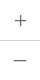
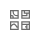
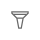
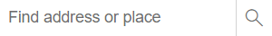
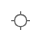
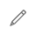

Intro paragraph!
|  | Zoom in and out of the map | |
|  | Change the basemap layer | |
|  | Toggle to filter by cryptid name | |
| Open and close the map legend | ||
|  | Type in a specific address or location | |
|  | Center the map on your current location | |
|  | Toggle the editor window to add/edit data |
Created by Eric Johnson for University of Wisconsin-Madison Geography 576 - Fall 2024
Much cryptid info from: Cryptid Wiki